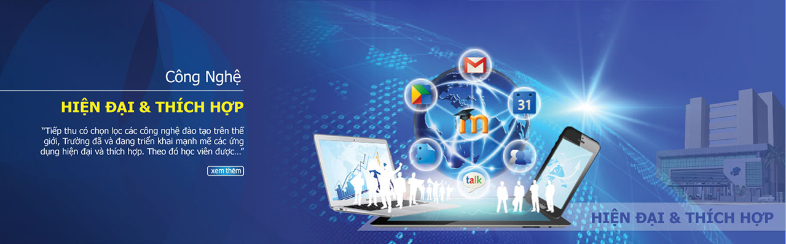

sơ lược về khoa công nghệ thông tin
giới thiệu chung
Khoa Công Nghệ Thông Tin (CNTT) được thành lập từ tháng 09/1990 và là một trong những Khoa
được thành lập đầu tiên của trường Đại Học Mở Tp. Hồ Chí Minh. Trải qua hơn 30 năm xây dựng
và phát triển, hiện nay Khoa có đội ngũ giảng viên cơ hữu giàu kinh nghiệm và tận tâm gồm
các Tiến sĩ, Thạc sĩ tốt nghiệp từ các trường danh tiếng trong và ngoài nước cùng với các
giảng viên thỉnh giảng đến từ các trường Đại học, viện nghiên cứu uy tín ở TP HCM. Khoa đã
đào tạo và cung cấp nguồn nhân lực có chất lượng cho xã hội với số lượng xấp xỉ 5.000 cử
nhân khoa học hệ chính quy khối ngành Công nghệ thông tin (Khoa học máy tính, Tin học,
Hệ thống thông tin quản lý) và hàng ngàn cử nhân Tin học hệ không chính quy.
Khoa đào tạo nhân lực cho ngành CNTT có đạo đức, có kiến thức lý thuyết tốt,
có kỹ năng thực hành thành thạo, có khả năng nắm bắt được những vấn đề mới của
sự phát triển ngành, phục vụ sự nghiệp công nghiệp hóa hiện đại hóa đất nước
thông qua quá trình tin học hóa các lĩnh vực quản lý kinh tế, quản lý sản xuất,
quản lý xã hội, giáo dục, …
Điều đáng tự hào chính là cựu sinh viên tốt nghiệp từ Khoa không chỉ là những nhân viên tin
học - lập trình viên - nghiên cứu viên giỏi ở các công ty trong nước - các nước phát triển,
mà còn là giảng viên của các trường Cao đẳng – Đại học, mà họ còn nắm giữ các vị trí điều
hành quản lý tại các công ty và Viện nghiên cứu. Sau khi hoàn thành chương trình Đại học,
rất nhiều cựu sinh viên của Khoa đã tiếp tục học ở các bậc học cao hơn như Thạc sĩ, Tiến
sĩ tại các trường danh tiếng trong và ngoài nước.
Phương thức tuyển sinh
Trường Đại học Mở Thành phố Hồ Chí Minh thực hiện 03 phương thức xét tuyển:
Phương thức 1: Xét tuyển dựa trên kết quả của kỳ thi THPT Quốc gia năm 2020.
Phương thức 2: Xét tuyển theo kết quả học tập các môn học ở THPT 3 năm lớp 10, 11 và 12 (HỌC BẠ).
Điểm nhận hồ sơ từ 20.0 điểm.
Phương thức 3: Xét tuyển dựa trên bài thi tú tài quốc tế (IB): điểm nhận hồ sơ xét tuyển từ 26 điểm.
tuyển sinh(2019)
Khối xét tuyển và ngành xét tuyển
- Toán, Lý, Hóa
- Toán, Lý, Anh
- Toán, Hóa, Anh
- Toán, Văn, Anh
- Ngành công nghệ thông tin điểm xét tuyển (22 điểm).
- Ngành khoa học máy tính điểm xét tuyển (20,5 điểm).
- Ngành hệ thống thông tin quản lý điểm xét tuyển (19 điểm).